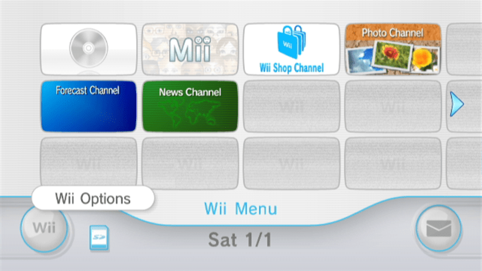
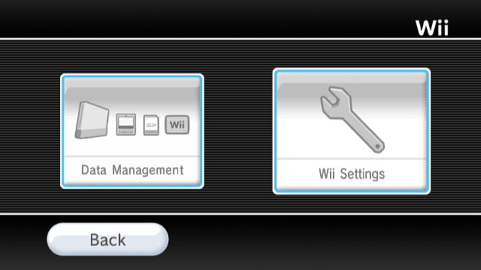
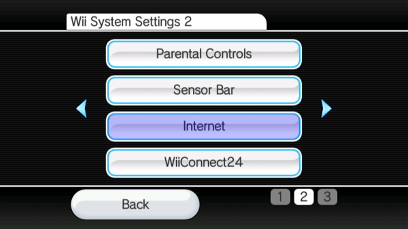
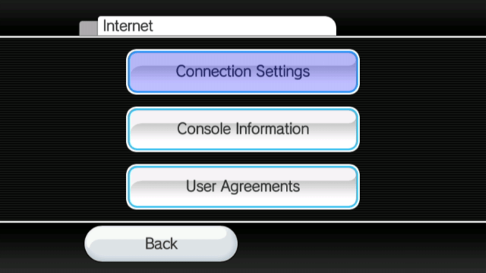
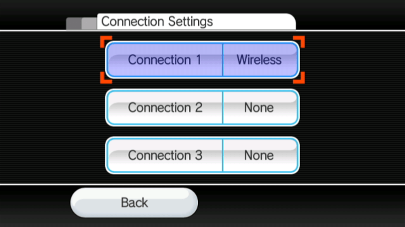
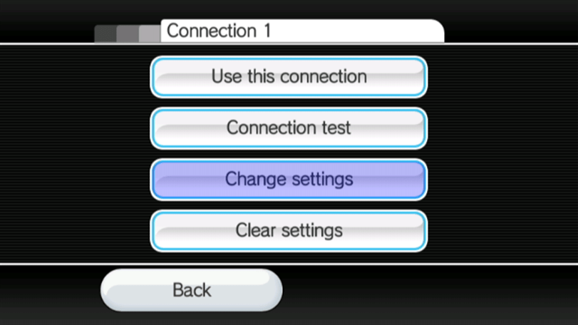
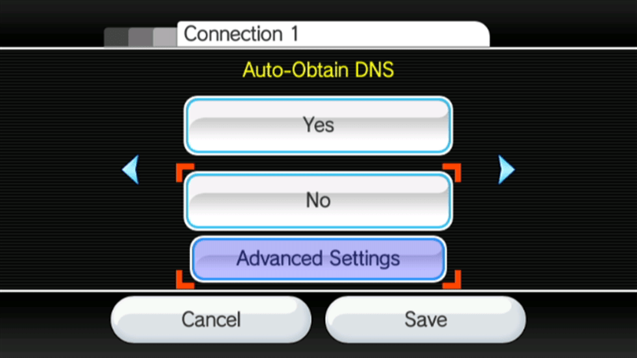
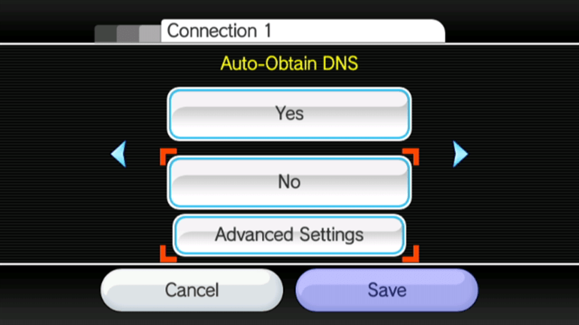
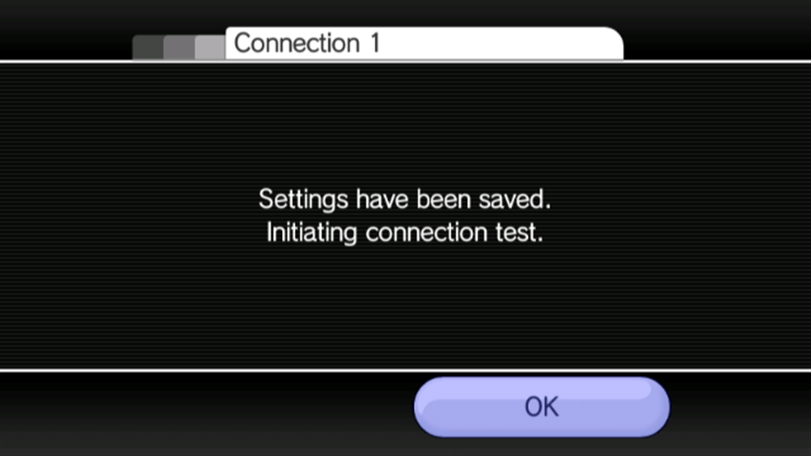
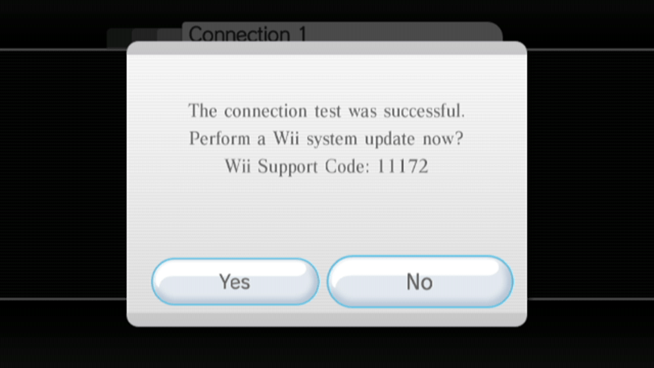

str2hax
Solltest du hinsichtlich dieses Tutorials Hilfe benötigen, trete bitte dem RiiConnect24 Discord-Server bei (empfohlen), oder kontaktiere uns per E-Mail unter [email protected].
Wenn dein Internetdienstanbieter oder deine Netzwerkumgebung die Nutzung eines alternativen DNS Servers verhindert, wird str2hax nicht funktionieren und du solltest einen anderen Exploit wählen.
str2hax ist ein Exploit für die Wii, welcher beim Laden des Endbenutzer-Lizenzvertrags (EULA) ausgelöst wird. Es nichts benötigt nichts außer einer Internetverbindung an deiner Wii, deren DNS sich verändern lässt.
Voraussetzungen
- Eine Wii mit Internetverbindung
Anleitung
Abschnitt 1 - Verbinden
Damit dieser Exploit funktioniert, musst du deine DNS Einstellungen bearbeiten, damit sich deine Wii zu einem Server verbinden kann, der den Exploit beinhaltet.
- Gehe in die
Wii-Optionen.  - Gehe in die
Wii-Systemeinstellungen.  - Gehe auf
Seite 2, wähle dannInternet.  - Gehe auf
Verbindungseinstellungen.  - Wähle deine derzeitige Verbindung aus. 
- Gehe auf
Ändern.  - Gehe auf
DNS automatisch beziehen(Nicht IP-Adresse), wähle dannNeinund gehe dann aufDetaileinstellungen.  - Gebe
18.188.135.9als primärer DNS-Server an. - Gebe
18.188.135.9als sekundärer DNS-Server an. - Wähle
Bestätigen, dannSpeichern.  - Wähle
OKum einen Verbindungstest durchzuführen. - Wenn der Verbindungstest erfolgreich war, wähle
Nein, um das Wii-Systemupdate zu überspringen.  - Wenn der Exploit nicht funktioniert hat, dann benutze bitte einen anderen Exploit.
- Wenn der Verbindungstest erfolgreich war, wähle
Abschnitt 2 - Ausführen des Exploits
- Gehe in den Bereich
Internet, dannVertrag/Kontrakt, dannJa. - Wenn du ein Pony auf einem hellblauen Hintergrund siehst, hast du alles richtig gemacht. Warte 1-2 Minuten, bis der Exploit ausgelöst wird (es sollte etwa 1 Minute und 25 Sekunden dauern). Dieser Exploit wird den HackMii Installer herunterladen damit du weiter machen kannst.
Wenn der HackMii Installer nicht lädt und sich deine Wii aufhängt (Du kannst deinen Zeiger nicht bewegen) oder es nicht 1-2 Minuten zum auslösen braucht, solltest du deine Wii neustarten und den Exploit erneut starten.
If you have installed a mod like CTGP Revolution or Project+, str2hax may load that instead. If it does, restart your Wii and try again without your SD card inserted.
Fahre fort mit der Installation des Homebrew-Kanals und BootMii